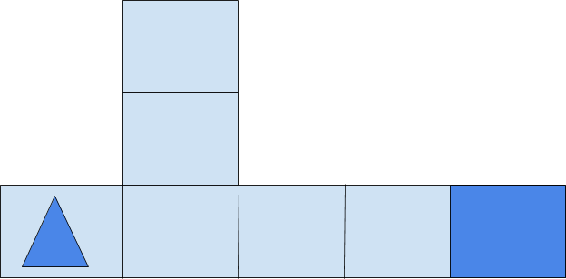

1. Give an example of a special purpose computer that you are familiar with and briefly describe its hardware and its software.
An example of special purpose computer would be a coffee maker, the hardward of the coffee maker would be to click the button for the oz of coffee you want and that amount of coffee would come out. The software of the coffee maker is how much coffee it will despense when the button is clicked.
2. Explain in your own words the difference between running your app by "Connecting to the Companion" and running your app by "Packaging" it.
The difference between running an app by "Connecting to the Companion" and running an app by "packaging" it is that when the app is connected by companion it will update everytime you edit or make changes to the app, but for "Packaging" once it is downloaded you cannot make changes to the app unless you update it or redownload it.
3. As we learned in this lesson, a byte is about the same amount of memory as a character, such as the letter 't'. There are approximately 7 million characters in all of the Harry Potter novels combined. How many bytes of memory would all of the Harry Potter novels take up? How many copies of the Harry Potter novels would fit on a 7 Gigabyte flash drive. (Remember 1 Gigabyte is 1 billion bytes.)
There would be 7 millon bytes of memory that the Harry Potter novel would take up and 1000 copies of Harry Potter novels that'll fit into 7 Gigabyte flash drive.
1. For the robot in the maze above, is CAN_MOVE(forward) true? Is CAN_MOVE(right) true?
Yes, the robot can move forward. The robot can_move forward after 2 steps forward, but the CAN_MOVE(right) would be false.
2. Write an algorithm using the 4 commands above to navigate the robot through the maze to reach the gray square. You can pretend that one of you is the robot and walk through your algorithm with your fingers on the maze. Are there commands that are repeated in your algorithm? Highlight them.
MOVE_FORWARD, MOVE_FORWARD
3. Let's replace the repeated commands with a repetition control structure. The following command can be used to repeat a block of commands (see image in 2.6): Rewrite your algorithm above using Repeat n times control structures (substituting in a number for n) instead of repeating the MOVE_FORWARD command many times.
Repeat 2 times (MOVE_FORWARD), ROTATE_RIGHT, Repeat 4 times(MOVE_FORWARD), ROTATE_LEFT, Repeat 2 times(MOVE_FORWARD)
4. Write a more general algorithm to navigate a maze using IF commands and a REPEAT UNTIL GoalReachedcommand, which tests if the robot has reached the gray square goal.
a. Which part(s) of the algorithm above are selection control structures?
b. Which part of the algorithm above is a repetition control structure? Remember a control structure can consist of multiple statements.
c. Does the algorithm solve the maze above and navigate the robot to the goal, the gray square? How many times does it need to run through the loop?
d. Create a maze this algorithm will NOT be able to solve! Include a description or a photo of your drawing of such a maze in your portfolio.
REPEAT UNTIL GoalReached
{
IF (CAN_MOVE forward)
MOVE_FORWARD
IF (CAN_MOVE left)
ROTATE_LEFT
IF (CAN_MOVE right)
ROTATE_RIGHT
}
a. IF (CAN_MOVE forward), IF (CAN_MOVE left), IF (CAN_MOVE right) are the selection control structures.
b. REPEAT UNTIL GoalReached is a repetition control structure.
c. Yes, it has to run 8 times.
d. 
1. In this lesson, you created your own sound board app. Give a brief description of it here. Describe its theme, if it has one, and what particular sounds (music or speeches) it plays. Attach or embed your video.
Me and my partners sound board app was centered around pokemon, it had 6 starter pokemons and they all played a sound of their voice. If the tablet was shaken it would play the theme song of pokemon, we created this app because my parnter loves anime like pokemon also since we both grew up watching pokemon.
2. Describe how you designed your app's UI. What components does it use?
Me and my partner designed our App's UI based on the I Have a Dream App, we added extra fetures to our app to make our app more appealing than the I Have A Dream App. The components our app uses is buttons, sound player, images, and shake sensitivity.
3. Now that you've had some experience building apps in App Inventor, what do you think about programming. Is it a creative activity? In what ways does it allow you to express yourself?
Now that I have experienced building apps in App Inventor I think programming is still super intresting and enjoyable, I do believe it is a creative activity because you are putting your creative ideas into this app. A way that programming allows me to express myself is putting anything I like into an app i create, for example if I like ASMR noises I could make a soundboard app on these ASMR noises i enjoy.